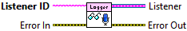

Listener ID is an unique string to identify the listener.
Gets the logging statements for a listener.
Interally, each listener is given a queue and logging statements are enqueued in the order they are received by the logging system. Thus, logging statements are broadcast to all registered listeners using queues. The Dequeue or Flush Queue primitives can be used handling receiving logging statements by the listener.
Note, a listener must first be registered for logging statements; otherwise, an error will occur when using this VI.

|
|
Listener ID is an unique string to identify the listener. |
|
|
Error In describes error conditions that occur before this node runs. This input provides standard error in functionality. |
|
|
Error Out contains error information. This output provides standard error out functionality. |
|
|
Listener A reference to the queue with logging statements for the listener. |